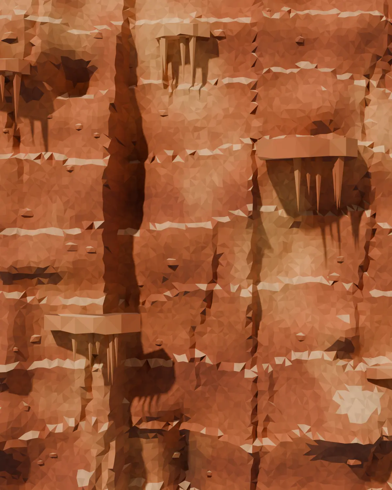

Tether
Two climbers on a terracotta wall, tied to one rope. A mobile game in MonoGame, in development for a university course.
- Year
- 2026, in development
- Built with
- MonoGame, C#, Blender, Python
- My part
- Code, the Blender wall and the scripted character art

The idea
Tether is a climbing game for phones. Two climbers move up a rock wall and share a single rope. I am building it in MonoGame for a game development course (TINR) at the Faculty of Computer and Information Science in Ljubljana.
What I built
- Every feature starts as its own small MonoGame project: drawing static images, touch and key input that changes the scene, and a first physics step where the climber moves with a starting velocity and bounces off the edges.
- The wall is a low-poly Blender model that a Python script generates and renders straight on.
- Both climbers are drawn by a Python script with Pillow, so new poses come from code and stay consistent.
- The chalk outline of the wall on the home page is a Freestyle line render of the same Blender model.
Status
In development. The repository is private for now.